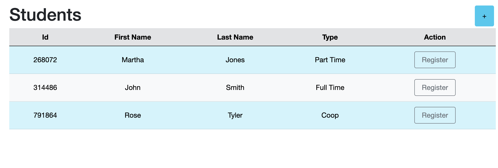
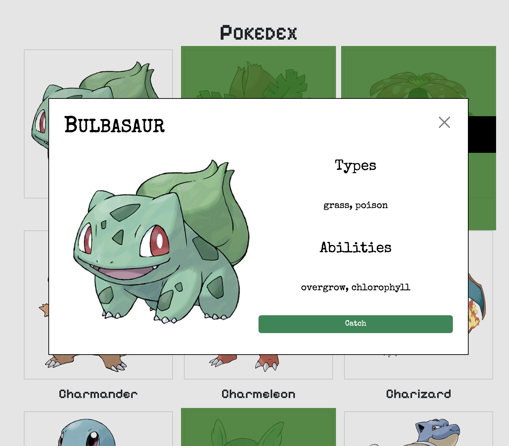
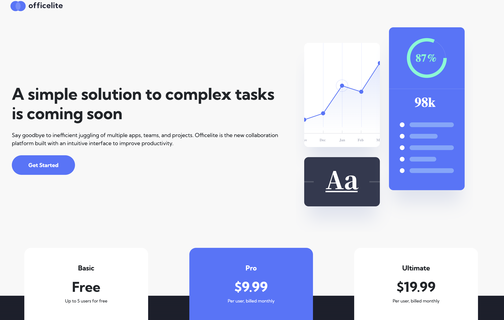
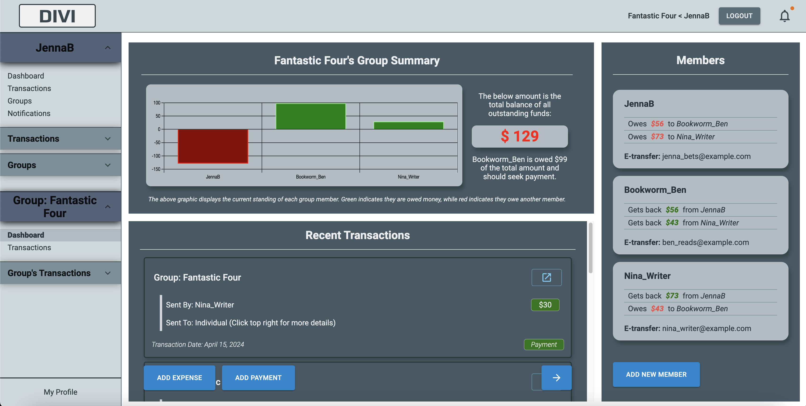
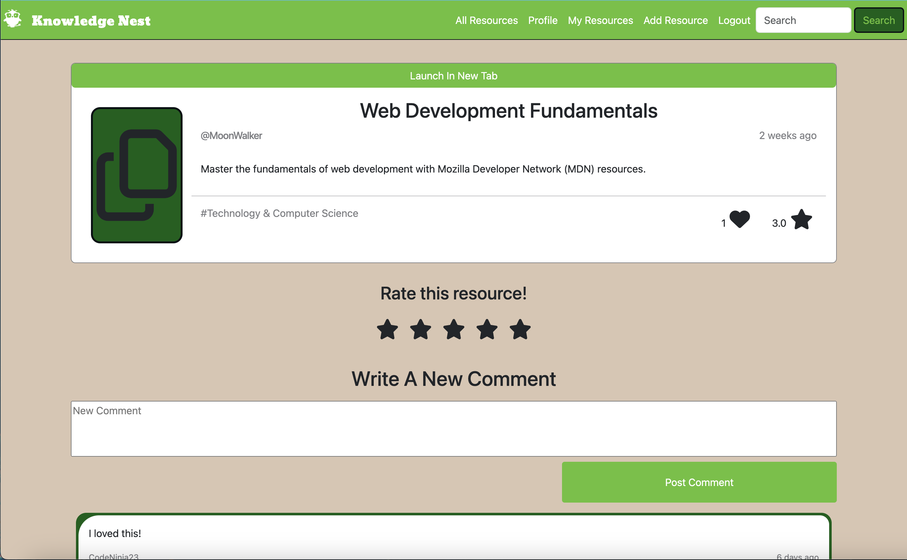

What it Does
In this C# Programming assignment, I created a database-driven student registration web application using Blazor (component-based .NET web framework using C#). New students can be added and registered for a number of courses, depending on student type.
Tech Stack: C#, Blazor, SQLite, HTML, Bootstrap, Object-oriented Programming
Behind the Scenes
This project was my first time using Blazor to build an application. While there were some similarities between Blazor and React from a compenents perspective, it took some time for me to understand componements from an object-oriented perspective.
Challenges
I had some issues creating the course registration form and ensuring the validation for different students types was working correctly. It took me some time and research to figure out the correct way to implement this, but I eventually made the form work as expected.
Final Thoughts
After completing this project, I feel much more comfortable with C# and Blazor, and using Models in web development.

What it Does
In this Web Programming assignment, I used the PokeApi to
design and develop a
Pokedex web application that
displays a gallery of Pokemon with images. Users can choose to load more Pokemon, view details about a specific
Pokemon, mark Pokemon as "caught", and "release" Pokemon.
Tech Stack: Javascript, CSS, HTML, Bootstrap, Fetch API, localStorage
Behind the Scenes
I used local storage for the first time, to maintain the "caught" and "released" status of the pokemon. This
was also my first time using Fetch API.
Challenges
I ran into some issues trying to set up the Bootstrap modal. Most of the Bootstrap documentation showed a button
linked to the modal, but I wanted to open the modal using an event listener when any pokemon was clicked on. I
tried a few different ways to make it work but didn't want to spend too much time on it. I ended up changing to
something I knew how to do, which was using the dialog element and event listeners to create a modal instead.
Final Thoughts
I would have liked to have figured out the Bootstrap modal and there a few small style issues that I've
noticed, but overall I'm happy with how it turned out. It works as expected!

What it Does
In this Web Design assignment, I was given basic starter files. I created a two-page responsive site that
closely resembled the mockups. Bootstrap was used extensively with some custom CSS to create a responsive
design.
Tech Stack: CSS, HTML, Bootstrap
Behind the Scenes
This was the final project for my web desgin class. I was provided with basic starter files, including mockups,
images, style guide, and text content. I was tasked with creating a responsive 2-page website that displayed
different views for mobile, tablet and desktop.
Challenges
I found it difficult to know where exactly to start, since I needed to make 2 pages with 3 distinct views for
each. In a previous project, I had started by creating the desktop view and ended with the mobile view, which
created more work than expected. I almost had to undo several aspects to convert desktop to mobile view.
For this project, I started with the mobile view, then made small updates to create the tablet view and finally
the desktop view. Given that Bootstrap is designed mobile-first as well, this approach worked well for me and
Final Thoughts
I wasn't fully satisfied with the spacing in the finished product, specifically the margin/padding of different
components between the mobile, tablet and desktop views. I added custom padding/margins as I completed each
view. If I were to do the project over again, I would probably format all views without adjusting the
padding/margin, then tweak them at the end to ensure better consistency between views.

What it Does
Divi provides users with a platform to track expenses and payments with their household, roommates,
friends, or other groups. Simply create a group, add members, and you're ready to go! Expenses are
automatically divided between all group members, so you don't need to any calculations. If you
accidentally overpay, Divi will track that too!
Tech Stack: React, Javascript, SASS/SCSS, Axios, Ruby on Rails, PostgreSQL
Behind the Scenes
I worked with a partner to create this app as the final project for the Web Development Bootcamp. We had
a week and a half to come up with an idea, make a plan, and create a full stack web application.
I created the majority of the mockups on Figma and set up the plan/timeline for the project. I created the
Trello board and ran our daily scrums, updating and reprioritizing tasks as we went.
I learned a lot of new skills on this project. It was my first time using React Router, which was
important for navigating to the many pages we created, as well as several modals. It was also my first
time using Material UI and I was able to play around a bit with creating themes.
Challenges
Ambitious goals were a problem from the start. There was so much we wanted to complete that we initally
had to cut half our features while we were planning. We had to cut a few more non-essential features as we
went to make sure we would be able to complete a viable product that we could demo.
We had also underestimated how long certain tasks would take since it was our first time using React and
Rails together, as well as React Router and GraphJS. Once we got over the initial learning curve, we were
able to move faster but needed to reprioritize tasks.
Final Thoughts
While there are a few features I would have loved to add, the app was completed and met the basic
requirements. Users are able to create a group, add members to the group, add expenses that are
automatically split between group members, and add payments to re-pay specific group members. The routes,
modals, and forms all worked correctly.

What it Does
Knowledge Nest is a full stack web application built with Node and Express that provides users with a
central location to save, share and interact with learning resources. Users can save external resoures
(urls) to their 'Nest' (My Resources) and add a custom title and description, as well as a category and
resource-type from a pre-determined list of options. Users can view, like, rate, and comment on other
users' resources. Liked resources will be added to the user's 'My Resource' page for future reference.
Tech Stack: Javascript, jQuery, AJAX, SASS/SCSS, NodeJS, Express, PostgreSQL
Behind the Scenes
This was the mid-term project for the Web Development Bootcamp. I had one week to work with a partner to
make a plan and create a full stack web application. I created the mockups on Figma and set up the
plan/timeline for the project. I created the Trello board and ran our daily scrums.
This was the first single page application I had created, as well as the first time I was using flexbox.
Challenges
As the first project I was working on without guidance, it was hard to know where to start. It took some
time to create a plan and figure out how to split the work between two people so that we weren't
duplicating work. There were a few features that we didn't have time to complete and some features that
were implemented weren't as cleanly finished as they could have been.
Final Thoughts
Despite the setbacks, we were able to complete our app in the week we had available.